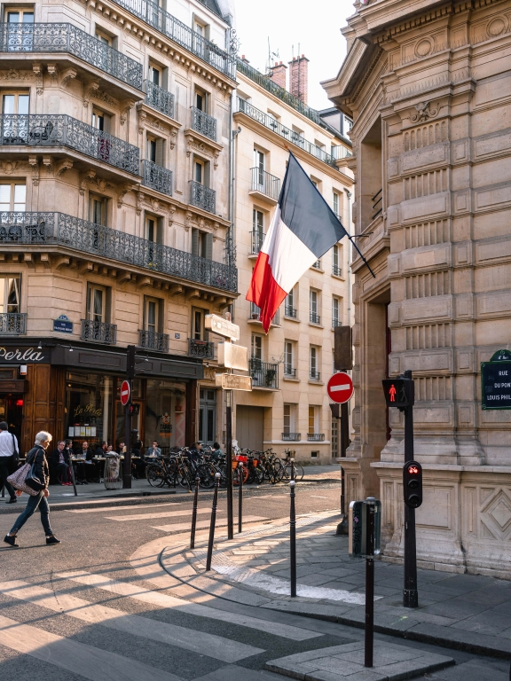
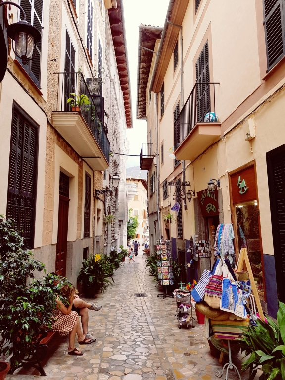
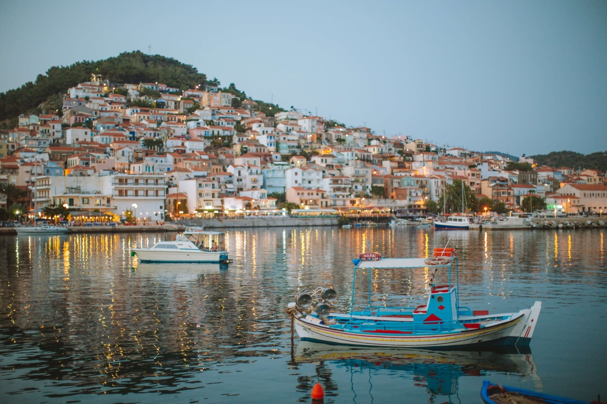

París
París es la capital de Francia y una de las grandes ciudades europeas. Es para muchos el destino turístico más romántico y popular de todo el planeta.

Barcelona
Barcelona es una ciudad llena de originales opciones de ocio que animan a visitarla una y otra vez. Abierta al mar Mediterráneo y afamada por Gaudí y su arquitectura modernista

Santorini
Se trata de un lugar de espectacular belleza natural, con una caldera volcánica inundada que forma una gran laguna de 12 kilómetros de largo y rodeada de acantilados de hasta 300 metros de altura.